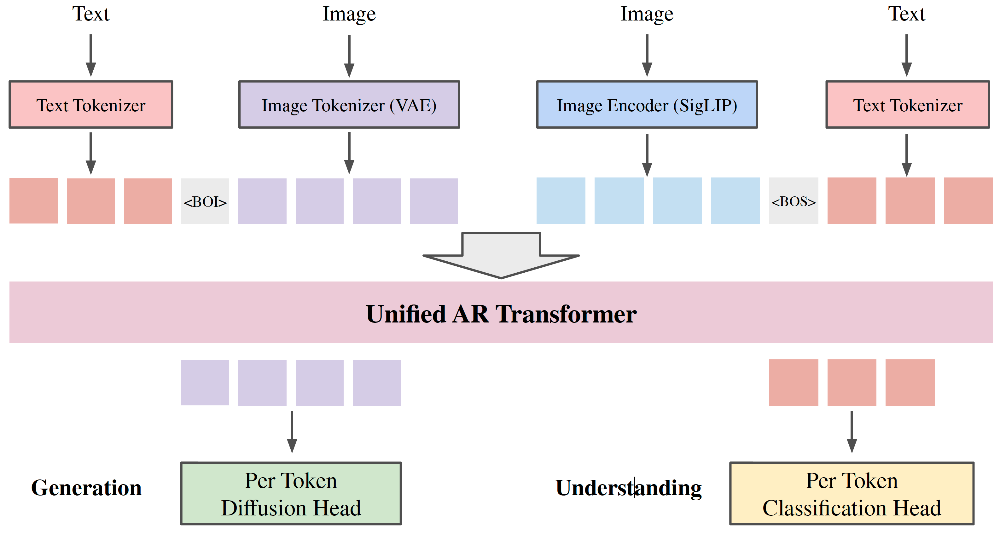
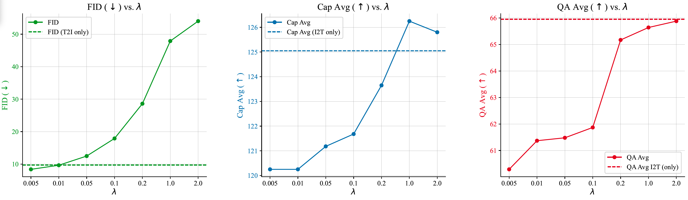
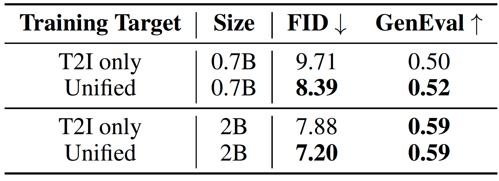
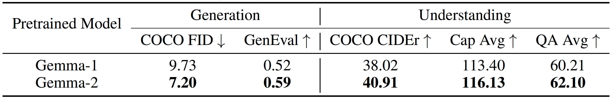

Unified Autoregressive Visual Generation and Understanding with Continuous Tokens
Lijie Fan, Luming Tang, Siyang Qin, Tianhong Li, Xuan Yang, Siyuan Qiao, Andreas Steiner, Chen Sun, Yuanzhen Li, Tao Zhu, Michael Rubinstein, Michalis Raptis, Deqing Sun, Radu Soricut
It achieves visual generation and understanding by applying diffusion loss on continuous visual tokens and cross-entropy loss on discrete text tokens.

Figure 1.Framework: joint training of visual generation and understanding tasks through next-token prediction. Tokenizer: use VAE to provide tokens for visual generation, use SigLIP to provide tokens for visual understanding, use SentencePiece to provide text tokens. Prediction head: use modality-specific prediction heads to calculate losses and sampling for each modality. Loss: image understanding loss on text answer + image generation loss on image tokens. Training details: batchsize=2048, optimizer=AdamW, lr=1e-4, steps=1M, init_ckpt=Gemma-2.

Figure 2. There is trade-off between generation & understanding.

Figure 3.Unified training improves generation.

Figure 4.Better pre-trained LLM backbone leads to better visual generation and understanding performance.